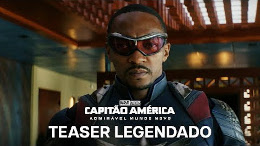
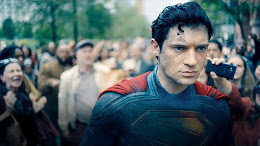

Filmes de heróis 2025
Durante muitos anos muitos filmes foram lançados, diversos deles com diversos gêneros, mas um gênero que veio fazendo muito sucesso durante os últimos anos foi o gênero de super-heróis, então aqui estarei fazendo uma pequena ánalise dos lançamentos deste ano.
Capitão América: Admirável Mundo Novo
Capitão América: Admíravel Novo Mundo que estreará em fevereiro deste ano, ira apresentar Sam Wilson assumindo definitivamente o manto e o escudo de Capitão América após os eventos de Falcão e o Soldado Invernal, abaixo você confere o trailer clicando na imagem:
Thunderbolts
Thunderbolts conta com um grupo de anti-heróis desajustados e nada convencionais formado por personagens já apresentados antes, Yelena Belova (Víuva Negra), Bucky Barnes (Capitão América: o soldado invernal), John Walker (Falcão e o Soldado Invernal), Fantasma (Homem formiga e a Vespa), Guardião Vermelho (Víuva Negra) e Treinadora (Víuva Negra), abaixo você confere o trailer clicando na imagem:
Superman
Um herói movido pela crença e pela esperança na bondade da humanidade. Em Superman, acompanhamos a jornada do super-herói em tentar conciliar suas duas personas: sua herança extraterrestre como kryptoniano e sua vida humana, criado como Clark Kent (David Corenswet) na cidade de Smallville no Kansas. Dirigido por James Gunn, o novo filme irá reunir personagens, heróis e vilões clássicos da história de Superman, como Lex Luthor (Nicholas Hoult), Lois Lane (Rachel Brosnahan), Lanterna Verde (Nathan Fillion), Mulher-Gavião (Isabela Merced), entre outros. O chamado de Superman será colocado à prova através de uma série de novas aventuras épicas e diante de uma sociedade que enxerga seus valores de justiça e verdade como antiquados. Abaixo você confere o trailer clicando na imagem:
